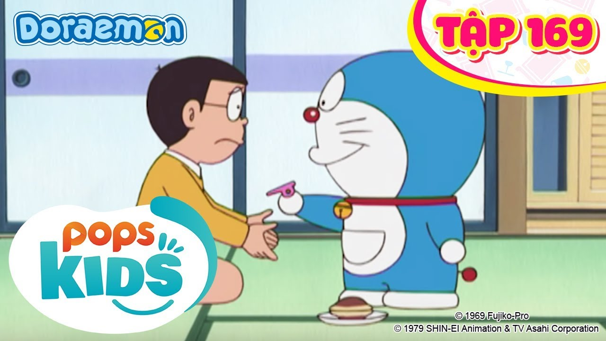

Channel Fun Suneo khủng lồ - 5,147,528 lượt xem
Doreamon Vietsub  Còi điều khiển vật - 5,147,528 lượt xem
Doreamon Vietsub
 Chiếc máy tạo kẹo bông -
5,147,528 lượt xem
Chiếc máy tạo kẹo bông -
5,147,528 lượt xemDoreamon Vietsub
Chiếc máy tạo kẹo bông -
5,147,528 lượt xemDoraemon (ドラえもん?)[1] là bộ truyện tranh Nhật Bản của tác giả Fujiko Fujio được sáng tác vào năm 1969, ban đầu dành cho lứa tuổi thiếu nhi. Tác phẩm sau đó đã được chuyển thể thành các tập phim hoạt hình ngắn, dài cùng các thể loại khác như kịch, trò chơi điện tử. Bộ truyện kể về một chú mèo máy tên là Doraemon đến từ thế kỷ 22 để giúp một cậu bé cấp 1 hậu đậu tên là Nobi Nobita. Các câu chuyện của Doraemon thường ngắn gọn, dễ hiểu, dí dỏm và mang cái nhìn lạc quan về cuộc sống tương lai cũng như sự phát triển của khoa học kĩ thuật. Doraemon đã giành được nhiều giải thưởng truyện tranh ở Nhật Bản và được tạp chí TIME Asia bình chọn là một trong 22 nhân vật nổi bật của châu Á.[2] Kể từ khi ra đời đến nay, Doraemon không chỉ được coi là nhân vật và bộ truyện tranh được yêu thích hàng đầu ở Nhật Bản, nó còn trở thành một biểu tượng văn hóa của đất nước này và được trẻ em nhiều nước trên thế giới yêu thích.